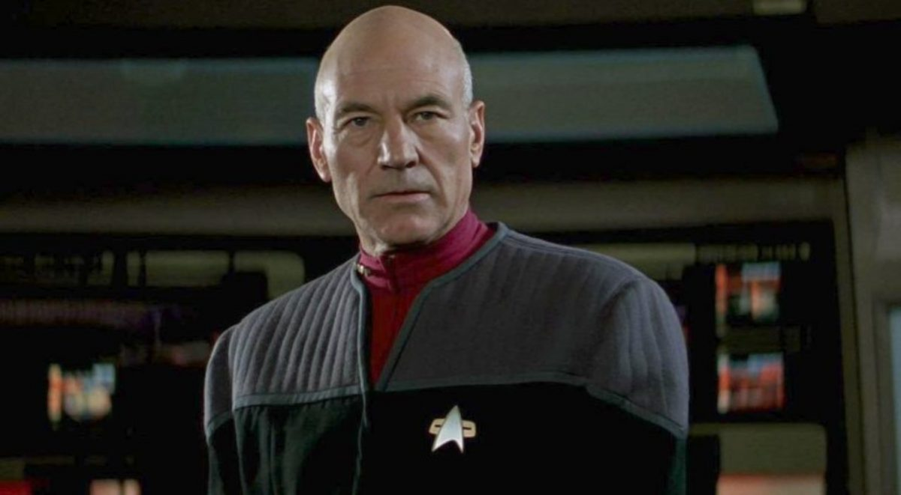
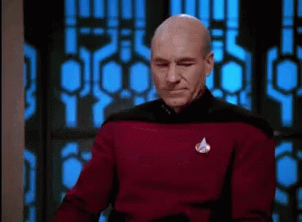
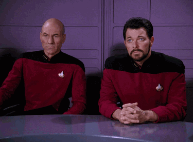

"The first duty of every Starfleet officer is to the truth."
Jean-Luc Picard, The First Duty
I was born to Maurice and Yvette Picard in La Barre, France, on 13 July 2305. As a child, I dreamed of joining Starfleet. I speak English, with the UK English dialect — the French language having become obscure by the 24th century. I have a special pride in being French. But I also have a number of British habits, including the regular consumption of Earl Grey tea, a fondness for Shakespeare (which I perform in holodeck simulations), riding horses with English tack and a knowledge of such British songs with Royal Navy associations as "A British Tar" (Gilbert and Sullivan) and "Heart of Oak".
As a young man, I failed my first Starfleet Academy entrance exam, and, upon admission, met with numerous ethical/scholastic difficulties during my cadet career, but went on to flourish, developing a lifelong passion for archaeology, and became the first freshman to win the Academy marathon. Shortly after graduation, I was stabbed in the heart by a Nausicaan, leaving the organ irreparable and requiring replacement with a parthenogenetic implant; this would prove near-fatal later. My first posting as an Ensign was on the USS Reliant, later serving as first officer aboard the USS Stargazer, which I later commanded. During that time, I performed a warp-speed battle tactic that would become known as the Picard Maneuver.
 Deeply moral, highly logical, and intelligent, I am a master of diplomacy and debate who resolves seemingly intractable issues between multiple, sometimes implacable parties with a Solomon-like wisdom. Though such resolutions are usually peaceful, I also use my remarkable tactical cunning in situations when it is required. I have a fondness for detective stories, Shakespearean drama, and archeology. My catchphrases are "Make it so" and "Engage", but also "Tea, Earl grey, hot" when ordering from the computer's replicator.
“It is possible to commit no mistakes and still lose. That is not weakness, that is life.”
Jean-Luc Picard, Peak Generation